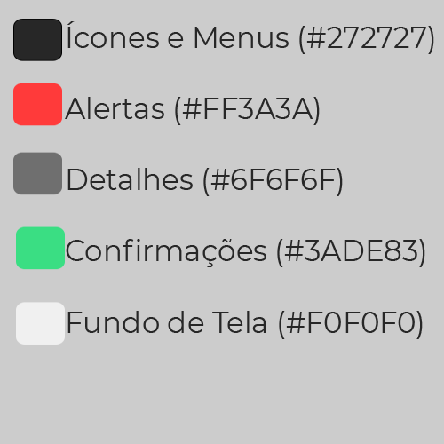

Guia de Estilo
1. Introdução
Guias de estilo consistem em uma documentação de uma série de decisões tomadas sobre o design do projeto para evitar que essas decisões se percam e garantir que elas serão introduzidas no projeto final [1].
2. Guia de Estilo
Tendo em vista o conceito e a importância de um guia de estilo, decidimos desenvolver o nosso para únificar as decisões de design do nosso projeto. Esse guia irá abordar os seguintes elementos:
- Padrão de Design
- Tipografia
- Simbolismo
- Cores
- Design de Telas
2.1 Padrão de Design
Padrões de design são descrições das melhores práticas em um determinado domínio. Então, tendo em vista o escopo de nosso projeto, decidimos optar pelo padrão de web design responsivo conhecido como Column Drop. O Column Drop é um padrão de web design responsivo que adapata a formatação das colunas do conteúdo de acordo com a largura da janela, de forma que conforme a janela se torna estreita demais, as colunas são empilhadas verticalmente.
2.1.1 Exemplo
Na imagem a seguir é demonstrado a formatação do layout em Column Drop, com a largura da janela sendo definida pela borda preta

2.2 Tipografia
Tipografia é definida como a arte e o processo de criação na composição de um texto, dessa forma aborda os aspectos visuais de qualquer elemento escrito do design, como títulos, parágrafos, informações em destaque, etc.
2.2.1 Nossa Tipograifa
Para consitência do projeto e entre todos os membros do grupo, definimos a tipografia que será utilizada no projeto.
- Nomes (nomes de lojas e serviços disponíveis): Open Sans Regular
- Informações (os dados das lojas encontradas): Montserrat Extra-light
- Links (qulquer hiper-link disponível na página): Montserrat Extra-light italic
- Menus (menus e informações da página em si): Open Sans Regular
3. Simbolismo
O objetivo da definição do Simbolismo do projeto é manter a clareza e a consistência no design de ícones para garantir compreensão e visibilidade.
3.1 Exemplos de símbolos do projeto
4. Cores
Para manter consistência no uso de cores e de seus tons em todas as páginas do projeto vamos também definir quais cores estarão presentes no projeto.
4.1 Paleta

5. Protótipos de Tela
Bibliografia
[1] Barbosa, S. D. J.; Silva, B. S. da; Silveira, M. S.; Gasparini, I.; Darin, T.; Barbosa, G. D. J. (2021) Interação Humano-Computador e Experiência do usuário. Autopublicação.
Versionamento
| Versão | Data | Modificação | Autor |
|---|---|---|---|
| 1.0 | 01/09/2021 | Criação do site | Antônio Aldísio |
| 1.1 | 02/09/2021 | Acréscimo do Conteúdo de Guias de Estilo | Álvaro Gouvea |